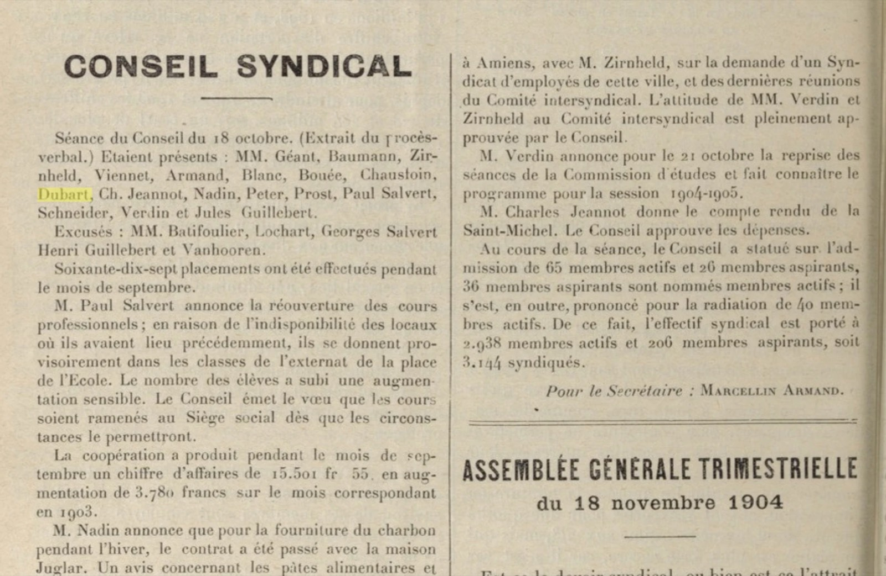

Presse · 25/11/1904 (séance du 18/10/1904 ; réunions de conscrits du 28/10/1904 et suivantes)
« L'Employé » (Paris), numéro du 25 novembre 1904 : « Conseil syndical — Séance du Conseil du 18 octobre » ; réunions de conscrits de la Commission des soldats (p. 9) ; article « En manœuvre »
Ce document établit
- Un « Dubart » (prénom non donné), non nommé à une fonction dans l'extrait, figure parmi les 17 conseillers présents à la séance du Conseil syndical du Syndicat des employés du commerce et de l'industrie du 18 octobre 1904 (extrait du procès-verbal, « Pour le Secrétaire : Marcellin Armand »), publiée dans L'Employé du 25 novembre 1904. non vérifié A0916
« Séance du Conseil du 18 octobre. (Extrait du procès-verbal.) Etaient présents : MM. Géant, Baumann, Zirnheld, Viennet, Armand, Blanc, Bouée, Chaustoin, Dubart, Ch. Jeannot, Nadin, Peter, Prost, Paul Salvert, Schneider, Verdin et Jules Guillebert. » (lecture incertaine : non)
- Lors d'une réunion publique de conscrits de la Commission des soldats du Syndicat (grande salle de la rue des Petits-Carreaux, environ 120 assistants, date non lisible, fin 1904), un « M. Dubart » (prénom non donné), cité parmi les personnalités de la table d'honneur, reçoit la parole après la lecture du procès-verbal par d'Hébécourt (secrétaire de la Commission) pour l'exposé des travaux de la Commission des soldats depuis sa fondation, devant les généraux Kirgener de Planta, Jacquey et Libermann, les abbés Casabianca et Ambler et, à son entrée, le député Lasies ; il n'est désigné ni président (M. Beaud) ni secrétaire de la Commission. Source : L'Employé du 25 novembre 1904, p. 9. non vérifié A0917
« prennent place à la table d'honneur : MM. le général baron Kirgener de Planta, les généraux Jacquey et Libermann, les abbés Casabianca, curé de Notre-Dame de Bonne-Nouvelle, et Ambler. MM. Beaud, président de la Commission des soldats, Géant, président du Syndicat, Barthélemy, Blanchet, Bourdin, Cénac, Dubart, Gaschet, d'Hébécourt, Lamour, Petit, Privitera, Verdin, Vanhooren, Viennet et Zirnheld. [...] la parole est donnée à M. Dubart pour l'exposé des travaux de la Commission des Soldats depuis sa fondation ; M. Dubart fait successivement passer devant les yeux de ses auditeurs les preuves palpables de l'activité de la Commission : les réunions de Pâques, de départ et de retour, les relations suivies avec les syndiqués au régiment, les cours d'instruction militaire et les excursions qui les ont accompagnés et complétés. [...] Ce rapport, fort intéressant, fut interrompu au milieu de sa lecture par de formidables acclamations accueillant, à son entrée dans la salle, M. le député Lasies [...] M. Beaud succède à M. Dubart ; » (lecture incertaine : non)
- Contexte de la source (non assertion sur Léon) : selon L'Employé du 25 novembre 1904, le Conseil du 18 octobre 1904 porte l'effectif du Syndicat à 2.938 membres actifs et 206 aspirants, soit 3.144 syndiqués ; la première réunion de départ des conscrits a eu lieu le 28 octobre sous la présidence du capitaine Pilliard, la deuxième est fixée au 11 novembre ; les réunions se tiennent dans la grande salle de la rue des Petits-Carreaux ; le ton est catholique (« de bons Français et de bons chrétiens » ; « les catholiques ne sont pas plus sots que d'autres » ; abbés à la table d'honneur). vérifié A0918
« l'effectif syndical est porté à 2.938 membres actifs et 206 membres aspirants, soit 3.144 syndiqués. / La première réunion s'est tenue le 28 octobre, sous la présidence de M. le capitaine Pilliard [...] Vous êtes de bons Français et de bons chrétiens [...] la deuxième réunion de départ, fixée au 11 novembre. / la grande salle de la rue des Petits-Carreaux regorgeait de conscrits. [...] Vous montrerez que les catholiques ne sont pas plus sots que d'autres » (lecture incertaine : non)
- Selon l'article « En manœuvre » de L'Employé du 25 novembre 1904, lors de la manœuvre de garnison du dimanche 18 septembre 1904 exécutée par les élèves du cours militaire du Syndicat sous la direction du président de la Commission des soldats (thème : un parti ennemi A à Meaux, reconnaissance à Chelles, parti B de la garnison de Paris cantonné à Rosny-sous-Bois, compagnie en grand'garde au hameau de Bois-d'Avron), l'attaque est menée « par le parti ennemi représenté par MM. Dubart et Gaschat, membres de la Commission des soldats et porteurs de fanions dans la circonstance » ; un « Dubart » (prénom non donné) participe donc en personne à la manœuvre. non vérifié A0919
« le dimanche 18 septembre, sous la direction du président de la Commission des soldats. [...] son attaque par le parti ennemi représenté par MM. Dubart et Gaschat, membres de la Commission des soldats et porteurs de fanions dans la circonstance [...] Il convient de dire aussi qu'en l'absence de leur dévoué professeur, M. Petit, accomplissant une période de 28 jours [...] comme l'a dit M. le lieutenant Beaud en résumant sa critique » (lecture incertaine : non)
Transcription
recherches/generation-3/leon-apres-1900/enquete.md
Personnes concernées
Six captures (quatre, puis deux de l'article « En manœuvre ») d'écran de Jessica ; date du numéro donnée par Jessica ; adresse Gallica non relevée. Prénom de Dubart jamais donné ; nom surligné sur les captures. Date de la réunion « grandiose » non lisible sur les captures (fin 1904).
Continuer
Toutes les archives →Document précédent« L'Employé » (Paris), numéro du 25 février 1903 (13e année, n° 106) : extraits de résultats de recherche plein texte « Dubart » (Conseil syndical, séance du 20 janvier 1903 ; Commission de contrôle ; remerciements pour places)25/02/1903 (séance du 20/01/1903)Document suivant« L'Employé » (Paris), numéro du 25 avril 1904 (14e année, n° 120) : extraits de résultats de recherche plein texte « Dubart » (Conseil syndical, séance du 15 mars 1904 ; extrait sur « ces mesures »)25/04/1904 (séance du 15/03/1904)